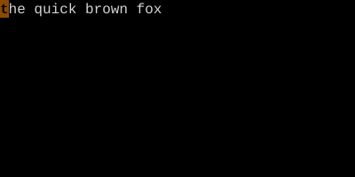
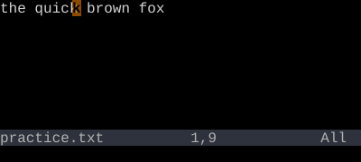

Move a word at a time. The grammar's first real noun.
id: editing.word-motions · part: editing · keys: w, b, e, ge · lessons: 21, 22, 23, 24
w/b/e/ge move forward and backward by word. They're motions, so they pair with operators: dw deletes a word, cw changes one, yw yanks one.
Moving one character at a time with hjkl is fine for surgery. For everything else you want to move a word at a time. That's what w, b, e, and ge do — and because they're motions, they double as the noun half of every editing command.
Forward to the start of the next word
Key
Note
w
Back to the start of the current/previous word
Key
Note
b
Forward to the end of the current/next word
Key
Note
e
Back to the end of the previous word
Key
Note
g
e
w — next wordb — previous worde — end of wordge — back-end
Reference
Key
Direction
Lands on
Counts
w
Forward
Start of next word
Yes
b
Back
Start of word
Yes
e
Forward
End of word
Yes
ge
Back
End of previous word
Yes
WBEgE
Same, but WORD-wise (whitespace boundaries)
—
Yes
Worked example — w b e
Move by word boundary.
Step 1 · Cursor on 't' of 'the'.

Step 2 · w · w — start of next word.
Step 3 · e · e — end of current word.

Step 4 · b · b — back to 'q'.
w/b move to word boundaries; e moves to the end of a word. With operators: dw, db, de all differ slightly — see grammar.